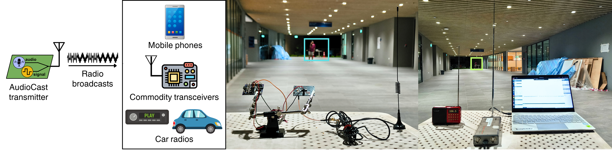
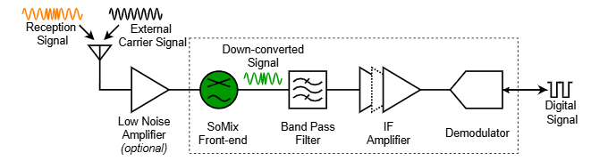
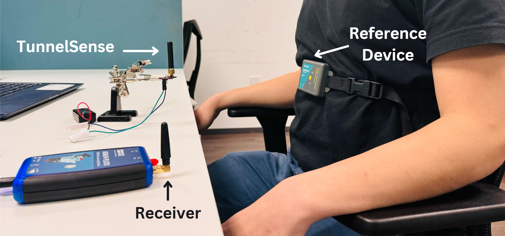

Contact Info
Email: rajashekar.c@u.nus.eduLinkedIn: Rajashekar Reddy Chinthalapani
Github: rez39
Google Scholar
Latest News
May 2025: Awarded student travel grant for attending ACM MobiSys 2025.
May 2025: Selected as one of the Rising Stars at the ACM MobiSys 2025..
Mar 2025: SoMix accepted at MobiSys 2025.
Mar 2025: AudioCast accepted to ACM IMWUT 2025.
Jan 2025: Awarded student travel grant for attending ACM HotMobile 2025.
Dec 2024: BioPulse (internship project with Nokia Bell Labs) accepted at ACM HotMobile 2025.
May 2024: Started summer internship with the Pervasive Systems group at Nokia Bell Labs, Cambridge.
Mar 2024: TunnelSense accepted at IEEE RFID 2024.
Oct 2023: TunnelRadio accepted at ENSSys 2023.
Aug 2023: Started PhD at the NUS School of Computing.
Blog Posts
Student Researcher Earns Dual Degree in Quick Time
- Sep 29, 2021
IIIT Hyderabad Team Shortlisted In International Hackathon On Air Quality
- Jan 31, 2021
IIITH - Hazeard
- Nov 30, 2020
|  |
|
AudioCast: Enabling Ubiquitous Connectivity for Embedded Systems through Audio-Broadcasting Low-power Tags
Project page / PDF Rajashekar Reddy Chinthalapani, Dhairya Jigar Shah, Nobel Ang, and Ambuj Varshney In the Proceedings of ACM Interact. Mob. Wearable Ubiquitous Technol. (IMWUT) 9, 2, Article 27 (June 2025), 2025 |
|  |
|
Unraveling the Missing Link in Low-power Communication: An Autodyning Receiver Architecture that Achieves a Long Range
Project page / PDF Sooriya Patabandige Pramuka Medaranga, Rajashekar Reddy Chinthalapani, Wenqing Yan, Prabal Dutta, and Ambuj Varshney In Proceedings of the 23rd ACM International Conference on Mobile Systems, Applications, and Services (MobiSys'25), 2025 |

|
|
BioPulse:Towards Enabling Perpetual Vital Signs Monitoring using a Body Patch
Project page / PDF C.Rajashekar Reddy, Vivian Dsouza, Ashok Samraj Thangarajan, Przemyslaw Pawelczak, Fahim Kawsar, Alessandro Montanari In The 26th International Workshop on Mobile Computing Systems and Applications (HOTMOBILE '25),, 2025 |
|  |
|
TunnelSense: Low-Power, Non-Contact Sensing Using Tunnel Diodes
Project page / PDF Lim Chang Quan Thaddeus, C Rajashekar Reddy, Yuvraj Singh Bhadauria, Dhairya Shah, Manoj Gulati, Ambuj Varshney In the 2024 IEEE International Conference on RFID (RFID), 2024 |
This website is based off the design by Prof. Amy X. Zhang.